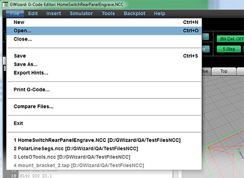
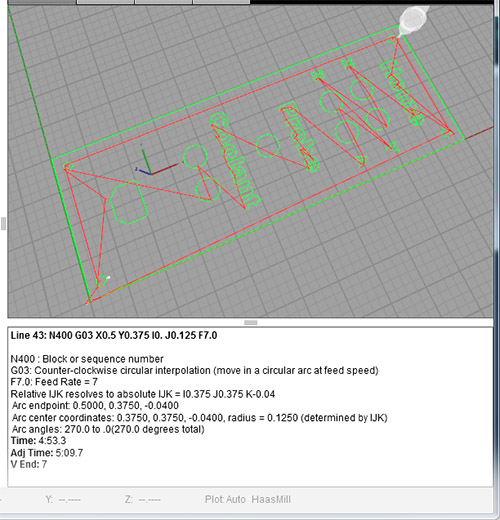
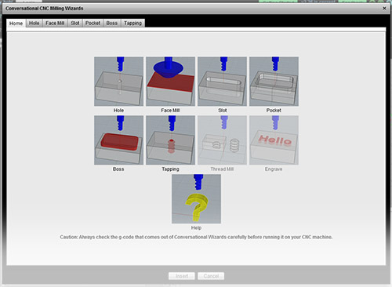
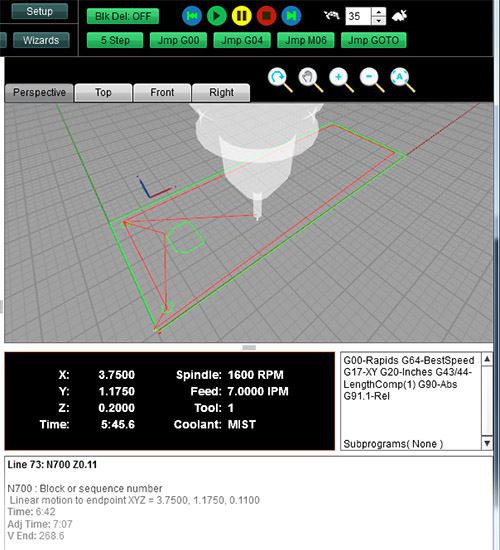
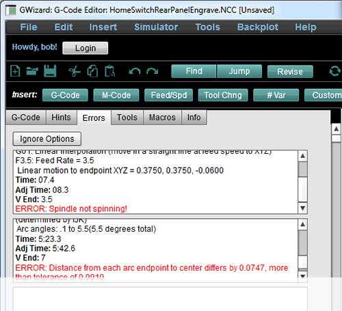

|
|
|
|
|
|
Is Manual Machining Faster Than CNC For Simple Parts?
Not With Conversational CNC!
With G-Wizard Editor's exclusive Conversational CNC, you can use simple point and shoot Wizards to generate quick g-code. No CAD drawings, no CAM, no complex g-code programming--perfect for quick projects.

Conversational CNC is Built Into
Every Copy of G-Wizard Editor
Quick setup. Free for 30-days.
Look, CAM is indispensible, but for some simple jobs it's overkill
CAM needs a drawing to start from. With CAM, there's no working from the back of the envelope.
CAM needs a lot of detail to support all the fancy things it can do. But if you're not doing anything fancy, why provide all the detail?
CAM is expensive and not everyone has a seat. How can knowledgeable machinists be productive without CAM?
CAM has a steep learning curve. How do manual machinists leverage their considerable knowledge to be productive right away?
CADCAM is powerful but slow. You can't do complex jobs without it. But why be slow on simple jobs?
Conversational CNC can help with all these problems
Choose the Conversational Wizard for your task:
There are simple Wizards for most common tasks by machine. Mills and Routers get the Wizards shown above. Lathes get their own Wizards:
A popup appears giving you a simple set of inputs to fill in:

It's easy to fill in the blanks, but they give you easy access to power. Each Wizard has been designed with an eye towards what real world machining situations need. Here are just a few of the power features available:
- Facing Wizard will radius into the cut, which reduces the wear on your tooling and improves surface finish.
- Variety of patterns for holes are available including grids, vectors, circles, arcs, and even the ability to load a list of hole coordinates from another source.
- Our custom Deep Hole Cycles can save time and go deeper than canned machine drilling cycles.
- Lots of little ease-of-use touches like the ability to "Break all edges" with a single click while turning multiple OD diameters.
Everyone should have a little Conversational CNC power in their Toolbox. It doesn't replace CAM, but it sure is handy for a lot of jobs.
The best thing is it comes with a radically easier way to deal with all GCode because it is a free built-in module of our power G-Wizard Editor and GCode Simulator. No need to buy an expensive stand-alone Conversational package or machine option. The way you get our Conversational CNC is just to get a copy of G-Wizard Editor, and that's easy.
G-Wizard
EDITOR
|
Get started in seconds Getting to work on your gcode is lightning quick thanks to our pre-defined machine Whether you're creating gcode from scratch, modifying existing gcode, or just getting a second opinion on some CAM-generated gcode, |
 |
|  |
Reading GCode is Easy Every line of your gcode is written out in plain English hints so you can see exactly what it does. Plus, there's lots of extra information like Arc center and radius, Angle of arc, Absolute end coordinates of every move, and much more. |
|
Conversational CNC: a gigantic timesaver Remember how easy it was to do simple things before CNC? No need for CAD or CAM, just walk up to the machine and make a part. Conversational CNC generates gcode quickly and easily without having to fire up CAD or CAM. Make simple parts fast! |
 |
|  |
Powerful Simulator Debugger Macros, subprograms, and parameterized programming give you loads of gcode programming power. G-Wizard Editor gives you the tools to simplify, understand, and harness that power. |
|
Extensive Error Checking Your machine doesn't just expect you to look at the backplot and figure it out--it has alarms. Most Editors just give you the backplot, but G-Wizard has an array of powerful error checks, messages, and a dedicated tab that shows you all the errors and warnings for your gcode. |
 |
|
Tool Table Savvy Drill down to see exactly which tools are used Manage tools with the same powerful Tool Crib capability found in our G-Wizard Calculator. |
Here's why people use G-Wizard Editor:

It's not just for writing g-code from scratch
In fact, most customers use it to verify and improve their CAM-generated NC programs
Go ahead, take the Tour and see what it can do for you:
You're in good company with GW Editor
|
Made GCode Easier to |
Found |
Used G-Wizard to |
Saved CADCAM Time |
| 40,892 times | 31,507 times | 42,903 times | 30,837 times |
Improved |
Used Conversational Wizards instead |
Hand Coded |
Reduced |
| 18,770 times | 18,099 times | 12,737 times | 20,781 times |
"The program’s (GW Editor) working great. It took an hour off my set up time the first day I used it."
"I use it for verifying my CAM output. It's saved me more than once from scrap or crashes. I've also learned a lot more about gcode."
"It's a great tool for the toolbox at a reasonable price."
See what else people are saying about G-Wizard software